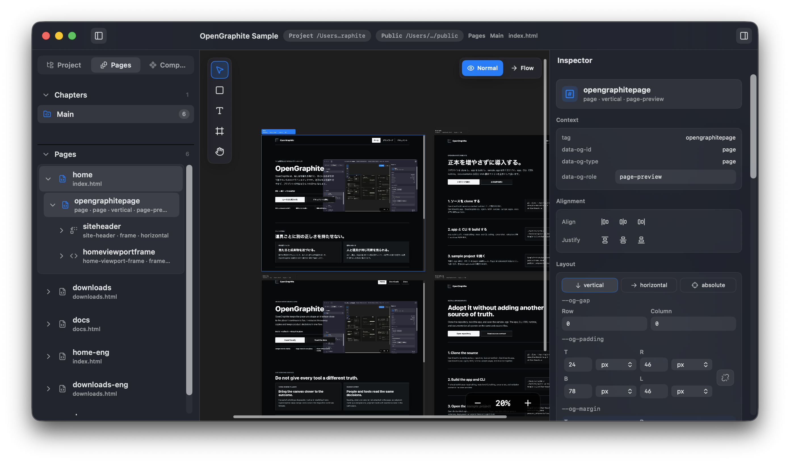

ホーム
ダウンロード
ドキュメント
つくる場所をひとつにするデザインエディタ
OpenGraphite
OpenGraphite は、見た目を整える場所と、あとに残る形を切り離さないためのデザインエディタです。迷子になる別版を増やさず、プロダクトの判断をひとつの流れに保ちます。
見る -> 直す -> そのまま残す
ローカルに導入する
ドキュメントを読む
見えているものに向き合う
意図をひとつに保つ
別版を増やさない

ひとつの作業面
道具ごとに別の正しさを持たせない。
残る場所でつくる
見た目と成果物を近づける。
試作の画面だけを美しくして、あとから作り直す時間を減らす。OpenGraphite は最初から次へ進む形に寄せて設計します。
意図を共有する
人と道具が同じ判断を見られる。
余白、順序、状態の意味をその場に残すことで、手作業の判断も支援する道具の判断も同じ場所に集まります。
設計思想
OpenGraphite は、正しさをもうひとつ増やさない。
01 / ひとつの場所
作る場所と残る場所を分けない
見た目を整えた結果が、そのまま次の作業に残る。確認用の写しを増やさず、ひとつの流れで考えます。
02 / 見える範囲
見えている範囲に責任を持つ
編集の対象が画面の外へ広がりすぎると、判断は曖昧になります。OpenGraphite は、いま見ているものから確かめられる変更を大切にします。
03 / 追える判断
人の判断を後から追える
誰が見ても意図を読み返せる形で残す。手を加えた理由と見た目の関係を、作業の中で迷子にしません。
見る
直す
確かめる。
残す